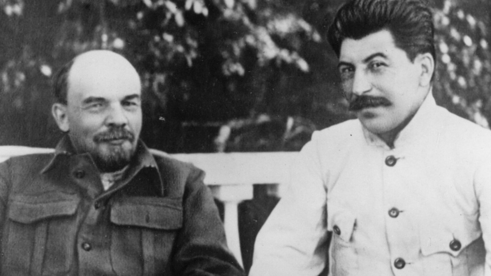

Nama Joseph Stalin merupakan sosok penting bagi sejarah Uni Soviet. Pria kelahiran 18 Desember 1879 ini adalah pemimpin diktator Uni Soviet selama lebih dari dua dekade. Sosok Joseph Stalin bagi Uni Soviet sangat penting perannya sebab di bawah kepemimpinannya, Uni Soviet menjadi kekuatan besar di dunia.
Joseph Vissarionovich Jughashvilli lahir pada 18 Desember 1878 di kota Gori, Georgia. dia dilahirkan dari pasangan Besarion Jughashvilli dan Keke Geledze

Joseph berasal dari latar belakang keluarga yang sederhana. Ayahnya merupakan seorang tukang sepatu sedangkan ibunya adalah seorang buruh cuci. Darah kediktatorannya tidak bisa dilepaskan dari pengalaman masa kecilnya. Semasa kecil, Joseph kerap menerima cemohaan karena kondisi fisiknya yang lemah dan cacat, tepatnya bagian lengan kirinya.

Stalin muncul sebagai Perdana Menteri Uni Soviet di tahun 1924 menggantikan Vladimir Lenin. Sifat kediktarorannya mulai muncul. Ia mengusir lawan-lawan politiknya dan juga orang-orang yang tak suka dengan gaya kepemimpinannya. Bahkan, ia tak segan untuk membunuh orang-orang yang berbahaya bagi kelanjutan karir politiknya. Dan juga, siapapun yang bertahan di Soviet akan ia perlakukan dengan kejam sekalipun itu rekan politiknya sendiri. Mereka-mereka itu oleh Stalin dianggap sebagai musuh-musuh negara dan patut untuk dihilangkan dari muka bumi ini.
Dalam Perang Dunia II (1939-1945), kunu Soviet yang dipimpin Stallin berpihak kepada pihak Sekutu. Pihak ini melawan kubu Adolf Hitler serta Nazi Jerman. Dengan mengerahkan seluruh pasukan yang ada, ia melakukan penyerbuan ke Stalingrad. Hal ini tentu menimbulkan namyaknya korban jiwa terutama warga sipil Uni Soviet. Di sisa-sisa akhir hayatnya, ia masih memiliki kekuatan untuk menaklukkan lawan politiknya meskipun dengan keterbatasan kondisi yang dimilikinya. Ia memerintahkan pasukannya untuk menahan dokter-dokter di Moskow atas tuduhan pembunuhan terhadap pejabat tinggi Rusia. Nampaknya, memang ini merupakan usaha Stallin untuk melakukan pembersihan kembali di negaranya. Belum sempat melakukan itu, Stalin harus menemui ajalnya. Ia meninggal di tanggal 5 Maret 1953.